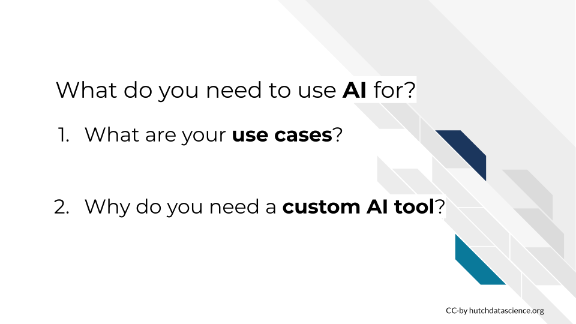
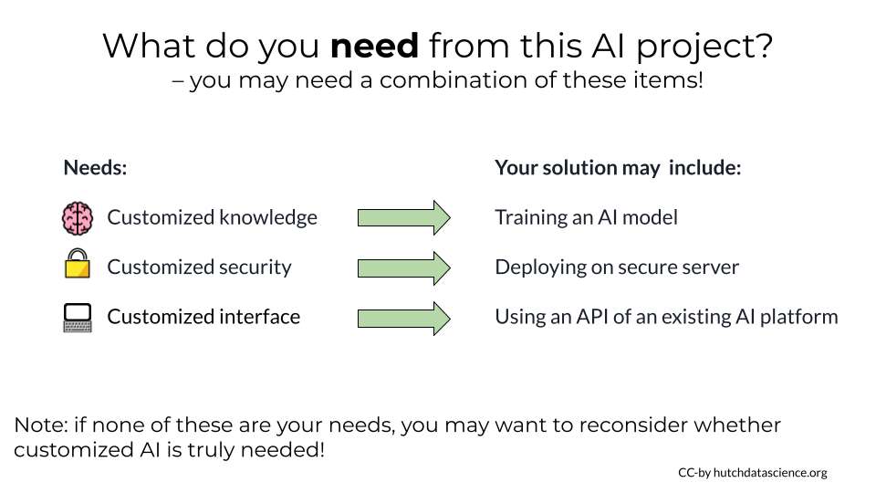
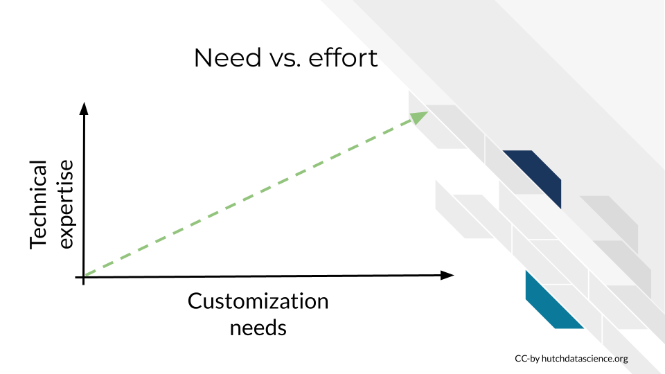
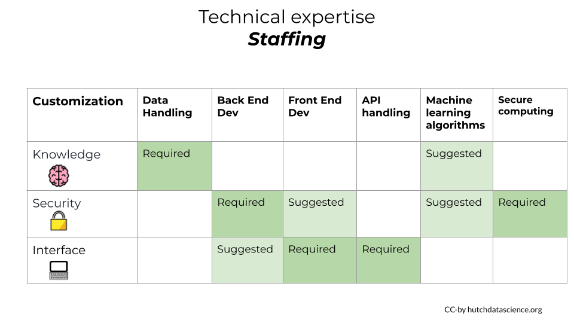
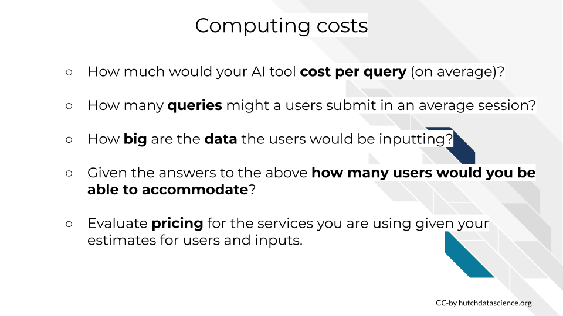
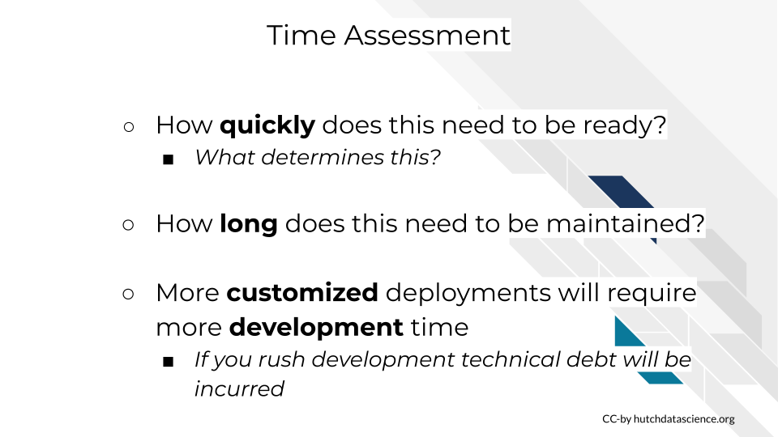

Determining your AI needs
Disclaimer: The thoughts and ideas presented in this course are not to be substituted for legal or ethical advice and are only meant to give you a starting point for gathering information about AI policy and regulations to consider.
Learning objectives:
- Establish your AI project goals
- Detail how these goals are not currently accomplished by a currently existing AI tool
- Identify what kinds of customizations your AI project requires.
- Evaluate the resources and staffing needs you will have for this project.
Intro
A project that is ill defined is doomed to fail or worse be a chronic headache and source of stress before it fails.
In this chapter we will describe the questions and considerations you should contemplate while planning for an AI project. The first of such considerations is basic: What are your goals and uses cases and how are these use cases something that is not currently achievable by currently existing other products?

Please take a moment now to jot down answers to the above questions for your project’s goals.
Let’s return to our oversimplified machine learning machine to discuss our possible case categories.
Recall that we’ve described AI tools as having the following:
- input what is the user of the tool providing?
- processing (including algorithms) – what are we going to do with that input?
- training data - how was the mode trained? what information was it trained on?
- output - what are we returning to the user of this AI tool?
Please take a moment now to jot down the answers of what these items are for your impending AI tool project.
Generalized Custom AI Use Cases
Here we will discuss three bins of AI tool customization needs that we will discuss for the rest of the course. Keep in mind that these customization categories are for the purposes of discussion and not necessarily google-able terms.
Note that these categories of AI customization needs almost never mutually exclusive. It is possible (and probable) that your project may have multiple or all of these needs. The more needs you have the more complicated your project will likely be. So carefully consider what is truly needed for your project.
However, these are increasingly doable needs to address. There are a growing number of helpful communities and developers who are experts in customizing interfaces, security, parameters, algorithms, data handling and more for AI tools.
Customized Knowledge
Perhaps the most common AI need is customized knowledge. This means that existing AI tools are not properly trained for the use case. Perhaps the input is domain specific and the training data or training methods have not adequately prepared existing models to provide useful output.

Perhaps the output of existing AI models is incorrect, not useful or even harmful. This means some better training is needed in order to meet your AI needs.
Customized Security
Many field have data that could benefit from AI tools but may be dealing with data that is private and needs protection. It is highly dangerous and probably illegal in many cases to share protected data with commercial AI platforms. So customized security solutions for AI tools is not an uncommon use case.

This doesn’t mean protected data can’t be used with AI tools, but it does mean the AI solutions involved with projects with protected data need to be very carefully planned and constructed. And respective experts should be consulted about these solutions to make sure patients or customer’s data is being kept safe!
Customized Interface
Perhaps your project could benefit from the power of AI but you need to do this automatically or you need your users to access AI tools from a customized interface.
This may be the most straightforward of the AI needs. An increasing number of AI tools have APIs available that can be used underneath the hood of your AI project.
The upcoming chapters will discuss each of these customized AI needs and examples of existing options in more details.
Generalized strategies for these needs
Take a moment to categories which of these AI needs are the largest priorities for your AI project. Note that the more customized needs you have the more work you will have that will be required by your team. And if you don’t have a large amount of technical expertise on your team, this will be required if you have a lot of custom AI needs.
Lastly, if none of the above describe your customized needs; you may want to consider whether you truly need a custom solution! It could be that commercially available AI platforms will fit your needs OR you may NOT need AI as a part of your project at all!
Don’t let the glitter of AI commit you and your team to a project that is ill defined!
Carefully consider what the project truly needs. Which of these needs are non negotiable versus “nice to have”? Note that if you are working with protected data, protecting this data is never negotiable, but other customized needs may be.
Below is a very general breakdown of what types of solutions will likely be a part of your AI project based on what needs you’ve identified.

For each type of need there is often a continuum of solutions that require less to more investment that we will discuss examples of in the upcoming chapters.
- For customized knowledge needs, you will likely be needing to train a model for your domain specific knowledge.
- For customized security needs, you may need to deploy an AI tool on a secure server or use some other type of security layering tool
- For customized interface needs, you may need to use an API of an existing AI tool or use prepackaged AI tools that you can embed in your website/app.
The Whole Picture
As with most management decisions, it’s never as simple as deciding what the project needs, its also necessary to evaluate what expertise, resources, and time you have available to you and your team.
You need to evaluate:
1. the technical expertise you have available to you
2. Your funding situation.
3. The quickness of the deadlines to which this AI tool needs to be operational.
Technical expertise needs
What technical expertise you have available on your team? If you do not have the expertise needed for your strategy, will you be able to use funds to hire someone who does? Can you involve a collaborator who has a team with complementary technical expertise to what your team provides? You also need to consider possible staff turnover if you are in an academic institution or other system where this is expected. Staff turnovers will make software development projects take longer even if the knowledge transfer between staff is optimized.

The more customization needs your project will need, the more you will need more technical expertise support on your team. Lone developer situations are not ideal; team work is better for development.
In this table we describe what kinds of technical expertise you will likely need on your team based on what kinds of customization AI needs your project entails. Keep in mind you can likely minimize these staffing needs if you pay for products that are prepackaged. Prepackaged products (which we will discuss in future chapters) generally require less expertise but will not allow you the same freedom for more granular customization.

- For knowledge needs, you will likely require a team who is comfortable with data handling techniques. It will also be ideal if they have a certain knowledge of machine learning algorithms.
- For security needs, it’s likely you will need someone comfortable with back end development and secure computing. Depending on your strategies with this need, it would also be good if you have a front end developer’s help.
- For interface needs, you’ll likely need a front end developer, as well as someone who is comfortable with using APIs, which also means potentially a back end developer.
Funding needs
Funding needs for AI projects is not necessarily straightforward. there are a number of costs you will need to consider.
Two major categories of costs include computing and staffing
 #### Computing costs
AI projects can be costly. And this is true whether you use a “prepackaged” AI solution or build one from scratch.
It is a good idea to estimate your computing costs before you begin your project.
- How big are the data the users would be inputting?
- How much would your AI tool cost per query (on average)?
- How many queries might a users submit?
- Given the answers to the above, how many users would you be able to accommodate for a given for a given day/month/year? – expect the best/worst case scenario of your tool being massively popular!
- Will users being paying for this service? Will the rate at which they pay cover your computing and staffing costs?

Whether you build “from scratch” or borrow commercial AI tools, you will likely not be able to avoid computing costs. Keep in mind that for certain levels of usage it may not actually be more cost effective to run your own computing infrastructure.
In this computing cost analysis graph from La Javaness R&D, they demonstrated how after a certain level of usage it is actually more cost effective to outsource infrastructure to ChatGPT’s API instead of building their own model and hosting it themselves.
Staffing costs
Custom deployments will require more technical expertise on hand as we discussed in the previous section – think salary costs. You will need to estimate whether it is more cost efficient for you to have in house developers work on this or use borrow commercial computing infrastructure.
It’s not just about developers. Ideally you would also have:
- A user experience designer to help you make sure the AI tool you build is actually useable by human beings!
- A project manager that will help everyone save time and meet deadlines
- Administration to actually help you hire the individuals you need, negotiate data use agreements, and all the other behinds the scenes paperwork necessary to keep the ship sailing smoothly.
Time needs
Time is a resource. For the purposes of your AI tool project goals, you should assess how much time you have. When determining how you will meet your AI strategy needs is how quickly you need these AI needs to be met.

- How quickly does this need to be ready? And what is determining that deadline? Can these deadlines be pushed?
- How long does this AI tool need to be maintained?
Note that more customized deployments will require more development time as compared to “prepackaged” AI tools. If you rush development technical debt will be incurred. Technical debt will need to be paid at some point for this project to be sustainable.
Example project strategies
Up until this point we’ve been discuss strategies in very vague terms. To bring this discussion to specifics, we will discuss some example AI tool project strategies you may employ based on what combination of customization AI needs you have.
These example project strategies are in the order of least to most resource and time investment.
In the left most column is described what kinds of customizations are able to be made given the described strategy.
- In the example column we have links to resources and platforms that would be a central point or product for this strategy.
- The technical expertise column describes vaguely how much technical expertise in house you would need to deploy the example strategy.
- The funding column describes approximately the funding costs that would be associated with the strategy (but not this is highly variable given specifics of a project).
- The time column describes how long it would take to deploy this solution.
Cogniflow example
Cogniflow is example of an AI tool that meets customized interface needs. It is a service that does not require code but has prepackaged AI tool solutions like chatbots and receipt digesters that can be readily deployed to a website. It is a subscription service but does not take much time to set up or maintain. This would not allow for much customization but it is a ready to go solution that would not necessitate hiring more staff.
OctoML is a similar type of premade machine learning tool that is ready for usage in your own tool. But it does allow for more customization and model training than Cogniflow. They have premade training models that are appropriate for a lot of common use cases.
PrivateAI
PrivateAI is an example of an AI tool that meets customized security needs but not really other customizations. This services has security layers that allows you to use other commercial AI platforms with PII and PHI. It is HIPAA compliant and is a pay-by-use service. It also would not take much time to use and would not require additional time to use. Of course, due to the importance of keeping protected data protected, it should be confirmed that PrivateAI is an acceptable use based on any legal agreements.
ChatGPT API
ChatGPT’s API services are an example of an AI tool that meets a customized interface and knowledge needs. Using an API would allow you to use the power of chatGPT but from underneath the hood of a custom made app or website. Additionally chatGPT’s API does allow for training models which means you could make it domain specific. Using an API would require more technical expertise than the previous two example strategies, but would not require building from scratch. This strategy can be a very customizable but not entirely from the ground strategy. It does of course, involve paying chatGPT for computing costs, so that as well as the staffing needs should be considered when employing this strategy.
Hugging Face
Hugging Faceis a community and repository of open source AI and machine learning models of all kinds of varieties. The resources available on Hugging Face would allow you to customize an AI tool to meet all the needs you might have. The open source nature of the AI models, datasets, and examples available on Hugging Face means that this not completely from scratch either but would require more technical expertise to utilize the resources here. The tutorials and resources on hugging face would allow you to control and build a AI model that fits every need you might have. But remember computing and staffing are always costs, hence why we have not said that this is necessarily a less expensive strategy. Depending on the size and technical expertise of your team it will likely take more time than the other strategies.
Conclusion
In the upcoming chapters we will discuss the ins and outs of customized AI needs and propose other strategies and considerations you will need to grapple with.